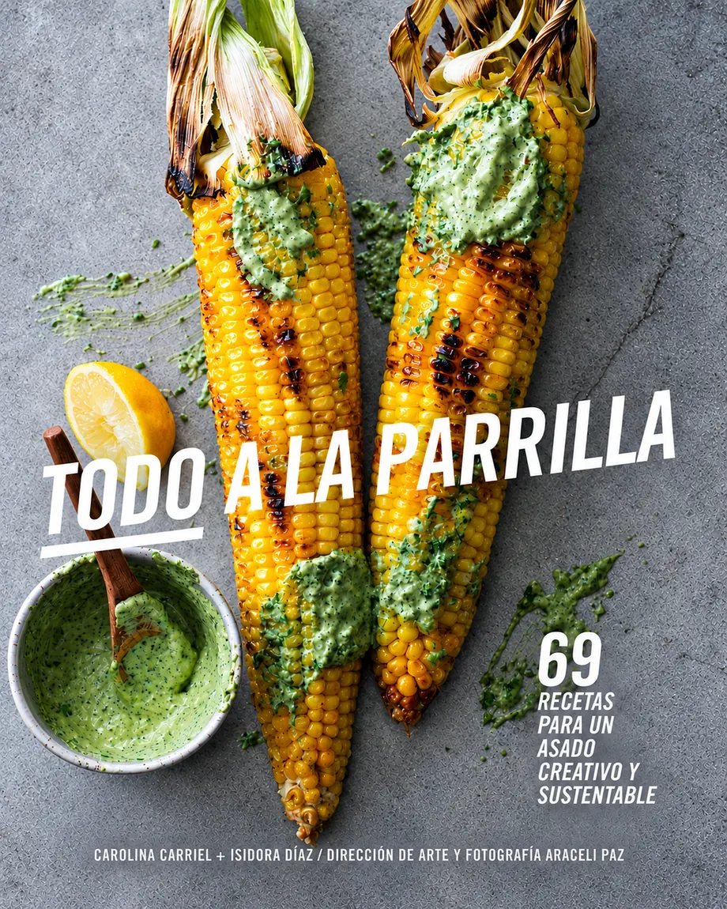
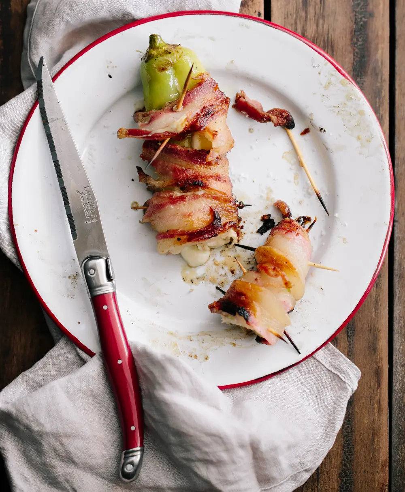
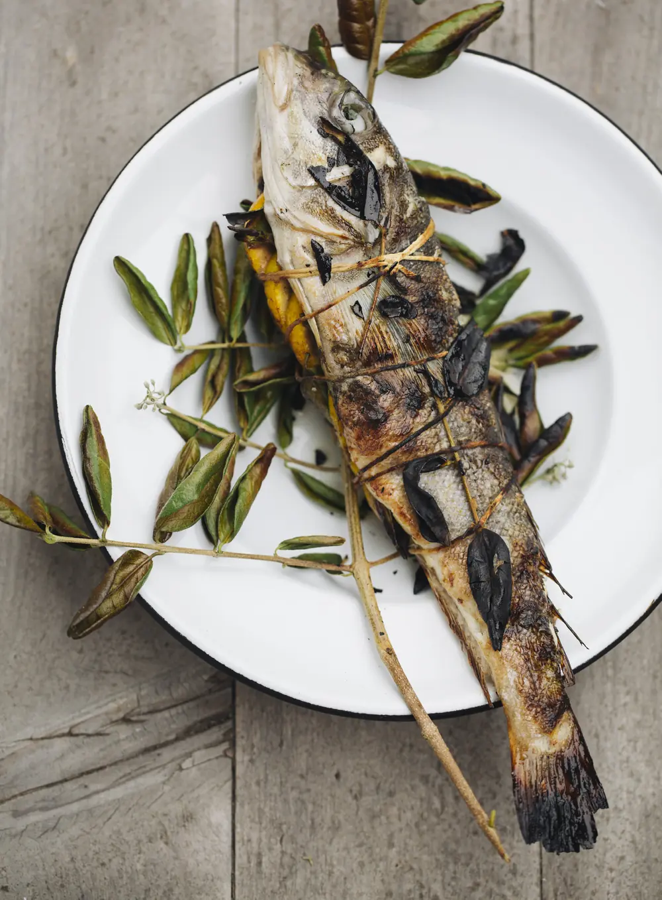
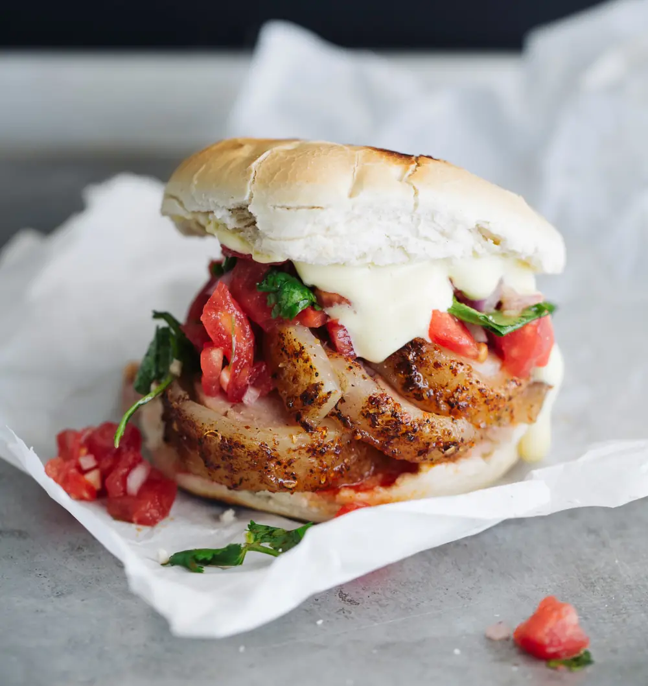
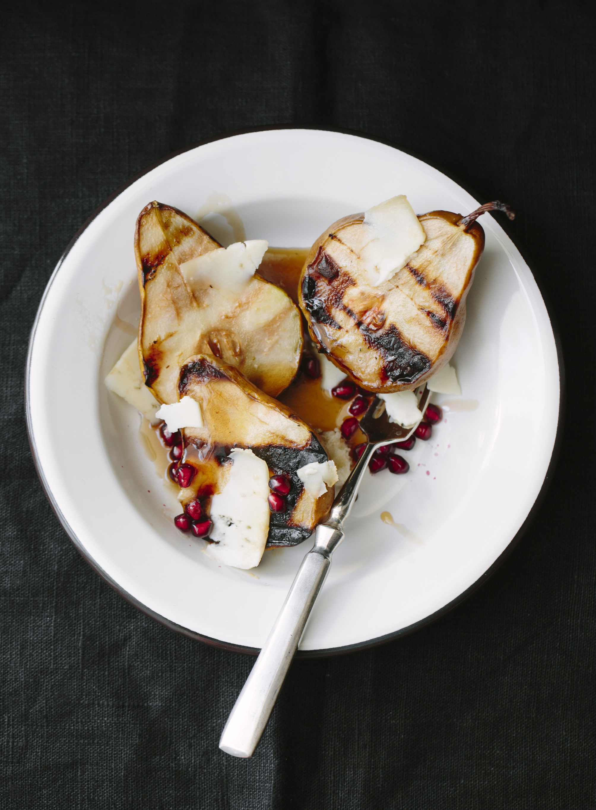
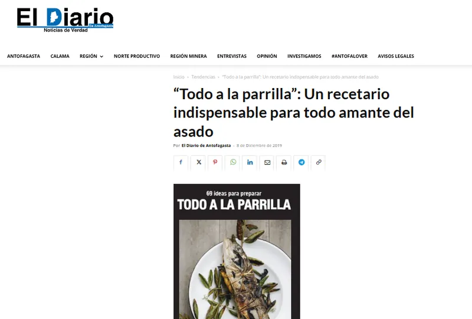

Todo a la Parrilla
69 ideas para preparar y descubrir que todo es parrillable cuando hay fuego y creatividad.
La Filosofía Parrillera
Más que un recetario, una guía para entender el fuego y el entorno.
La máxima es que “todo es parrillable y parrillar es cocinar”: cualquier preparación, desde un ceviche hasta una fruta, de una tostada a un arrollado, queda más rica si pasa por el calor de las brasas y el baile naranja del fuego directo.
Este libro une la audacia de sabores nuevos con los gustos clásicos, basándose siempre en la alimentación consciente y responsable. Para entenderlo, las autoras aconsejan y guían al parrillero en un gesto ancestral, divertido y sabroso.
Sabor a las Brasas
Explora algunas de las preparaciones incluidas en el libro.

Ajíes rellenos con queso maduro de vaca y envueltos en tocino
Ingredientes
- 4 ajíes verdes (o de otro tipo no muy picantes) de 20 cm aprox.
- 200 g de queso maduro de vaca, picado en trozos largos de 1 x 10 cm
- 100 g de tocino laminado
Además vas a necesitar: palillos previamente remojados en agua por 30 minutos.

Blanquillo entero con boldo y naranjas
Ingredientes
- 2 blanquillos frescos y lavados, con cabeza y cola, eviscerados
- aceite neutro suficiente para pintar el pescado
- 1 naranja, en rodajas finas y cada una de ellas partida por la mitad, como medias lunas
- sal de mar
- 10 a 12 ramas de boldo, romero o laurel, un poco más largas que el tamaño del pescado
Además vas a necesitar: hilo de algodón para amarrar carnes y brocha de cocina.

Sánguche de arrollado asado con pebre y mayonesa casera
Ingredientes
- 1 arrollado de tamaño mediano, cocido, frío y cortado en rodajas gruesas
- 4 panes para sánguches
- mantequilla, lo suficiente para untar las bases de los panes
Para la mayonesa
- 1 huevo entero
- 1 taza de aceite de maravilla
- jugo de ½ limón amarillo
- sal de mar
Para el pebre
- 1 tomate grande y maduro, picado en cubos pequeños
- ½ cebolla blanca, picada en cubos pequeños
- ½ ají verde o similar, picado fino
- ½ taza de cilantro, picadas finas
- ¼ taza de vinagre
- 1 cucharada de aceite neutro
- sal de mar
Además vas a necesitar: batidora de mano eléctrica o licuadora.

Peras asadas en salsa de vino blanco, con queso de cabra y granada
Ingredientes
- 4 peras medianas y firmes, cortadas en mitades
- 2 cucharadas de mantequilla con sal
- 150 g de queso de cabra maduro, en lascas gruesas
- 1 granada, desgranada
Para la salsa
- 1 ½ taza de vino blanco
- 6 cucharadas de azúcar rubia
Además vas a necesitar: sartén mediano o grande que se pueda poner sobre la parrilla.
En Acción
Conoce más sobre la propuesta detrás de "Todo a la Parrilla".
Notas de Prensa

"Todo a la parrilla: un recetario indispensable para todo amante del asado"
— Diario Antofagasta Leer la noticia →Autoras
Conoce a las personas detrás de "Todo a la Parrilla".